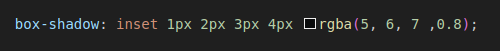

CSS box-shadow property is about to blow your mind! Think of it like a superpower – you wanna make your buttons pop? Bam! A touch of box-shadow. Need your images to look extra mysterious and dramatic? Box-shadow to the rescue!
Basically, it lets you cast a dope shadow around any element on your page, giving it more depth and dimension. Plus, it's easy to play with! And here's the magic code, hot off the presses:

Breakdown of the Values
- H-Offset: Shifts that shadow to the right (positive values) or left (negative values). It's your x-axis
- V-Offset: Same deal, but for up (positive values) and down (negative values). It's your y-axis
- Blur: This softens the shadow's edges. More blur equals fuzzier shadows.
- Spread: Controls how big the shadow grows. How far it stretches across the page.
- Color: sets the color of your shadow. Time to let your creativity fly!
- Opacity: how see-through your shadow is
- Inset: This one flips the switch. Instead of the shadow sticking out, it sinks in, creating a cool inner shadow effect.
Bonus: You can stack multiple box-shadow effects! Layer those shadows to create even wilder and more complex looks.
EthanDotLog's Shadow-Box Generator
Horizontal Offset:
-250
250
Vertical Offset:
-250
250
Blur Radius:
0
400
Spread Radius:
-250
250
Shadow Color:
Shadow Color Opacity:
0
1
Inset
Your Custom Shadow-Box